This package contains interface definitions for continuous input/output blocks with Real, Integer and Boolean signals. Furthermore, it contains partial models for continuous and discrete blocks.
| Name | Description |
|---|---|
| 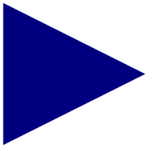 RealInput | 'input Real' as connector |
| 'output Real' as connector | |
| 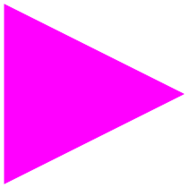 BooleanInput | 'input Boolean' as connector |
| 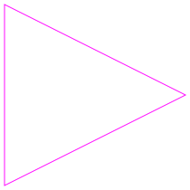 BooleanOutput | 'output Boolean' as connector |
| 'input Integer' as connector | |
| 'output Integer' as connector | |
| Real input connector used for vector of connectors | |
| Integer input connector used for vector of connectors | |
| Boolean input connector used for vector of connectors | |
| 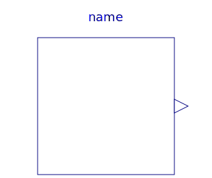 SO | Single Output continuous control block |
| Multiple Output continuous control block | |
| 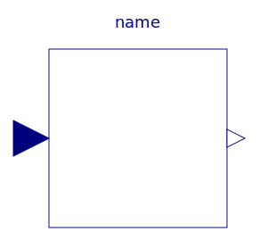 SISO | Single Input Single Output continuous control block |
| 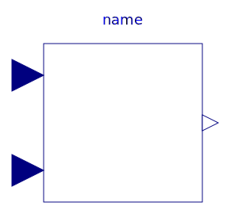 SI2SO | 2 Single Input / 1 Single Output continuous control block |
| Single Input Multiple Output continuous control block | |
| Multiple Input Single Output continuous control block | |
| Partial block with a RealVectorInput and a RealOutput signal | |
| MIMO | Multiple Input Multiple Output continuous control block |
| MIMOs | Multiple Input Multiple Output continuous control block with same number of inputs and outputs |
| 2 Multiple Input / Multiple Output continuous control block | |
| SignalSource | Base class for continuous signal source |
| SVcontrol | Single-Variable continuous controller |
| 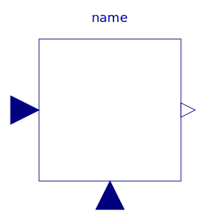 MVcontrol | Multi-Variable continuous controller |
| Base class of discrete control blocks | |
| 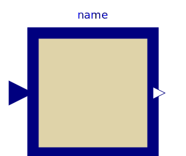 DiscreteSISO | Single Input Single Output discrete control block |
| 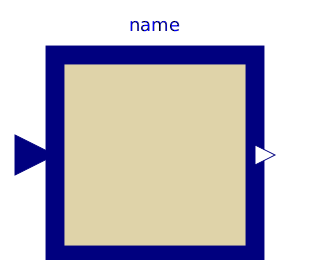 DiscreteMIMO | Multiple Input Multiple Output discrete control block |
| DiscreteMIMOs | Multiple Input Multiple Output discrete control block |
| Discrete Single-Variable controller | |
| 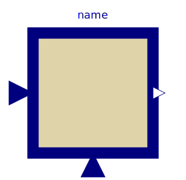 MVdiscrete | Discrete Multi-Variable controller |
| 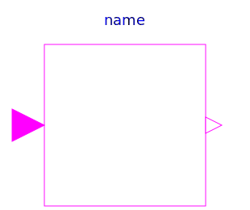 BooleanSISO | Single Input Single Output control block with signals of type Boolean |
| Multiple Input Multiple Output continuous control block with same number of inputs and outputs of Boolean type | |
| 2 Multiple Input / Boolean Multiple Output block with same signal lengths | |
| 2 Single Input / Boolean Single Output block | |
| 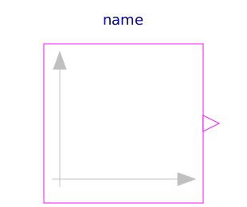 BooleanSignalSource | Base class for Boolean signal sources |
| Single Integer Output continuous control block | |
| Multiple Integer Output continuous control block | |
| Base class for continuous Integer signal source | |
| Integer Input Boolean Output continuous control block | |
| Multiple Integer Input Multiple Boolean Output continuous control block with same number of inputs and outputs | |
| 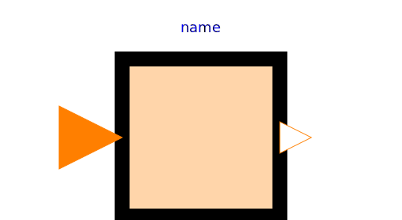 PartialIntegerSISO | Partial block with a IntegerInput and an IntegerOutput signal |
| 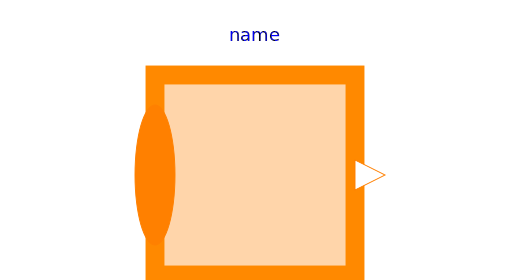 PartialIntegerMISO | Partial block with an IntegerVectorInput and an IntegerOutput signal |
| Partial block with 1 input and 1 output Boolean signal | |
| Partial block with 2 input and 1 output Boolean signal | |
| Partial block with 3 input and 1 output Boolean signal | |
| Partial block with 1 input Boolean signal | |
| 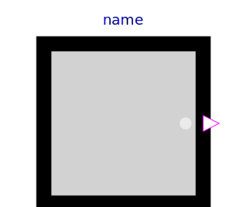 partialBooleanSO | Partial block with 1 output Boolean signal |
| 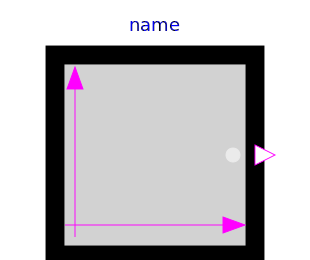 partialBooleanSource | Partial source block (has 1 output Boolean signal and an appropriate default icon) |
|
|
Partial block to compare the Real input u with a threshold and provide the result as 1 Boolean output signal |
| 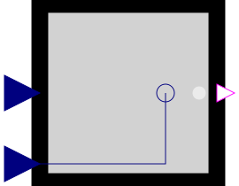 partialBooleanComparison | Partial block with 2 Real input and 1 Boolean output signal (the result of a comparison of the two Real inputs) |
| Partial block with a BooleanInput and a BooleanOutput signal and a small block icon | |
| 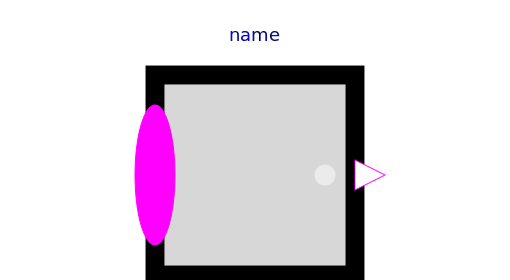 PartialBooleanMISO | Partial block with a BooleanVectorInput and a BooleanOutput signal |
| Obsolete package with components to send signals to a bus or receive signals from a bus (only for backward compatibility) | |
| Partial block defining the interface for conversion blocks | |
| This icon will be removed in future Modelica versions, use Modelica.Blocks.Icons.Block instead. | |
| This icon will be removed in future Modelica versions, use Modelica.Blocks.Icons.BooleanBlock instead. | |
| This icon will be removed in future Modelica versions, use Modelica.Blocks.Icons.DiscreteBlock instead. | |
| This icon will be removed in future Modelica versions, use Modelica.Blocks.Icons.IntegerBlock instead. | |
| This icon will be removed in future Modelica versions, use Modelica.Blocks.Icons.PartialBooleanBlock instead. |